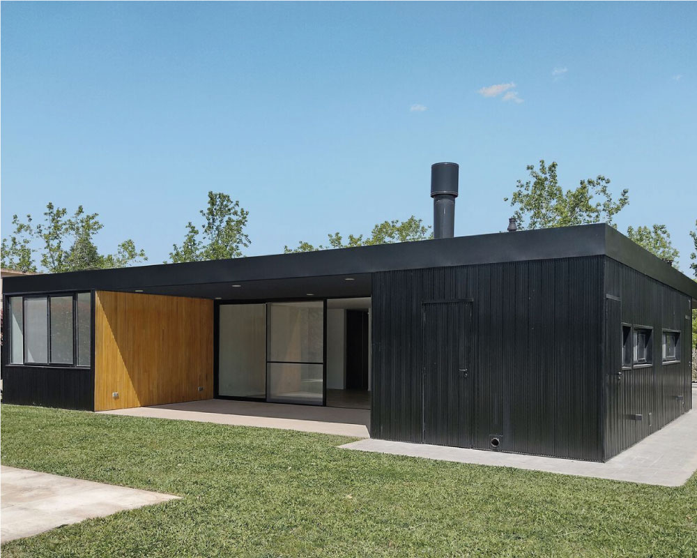
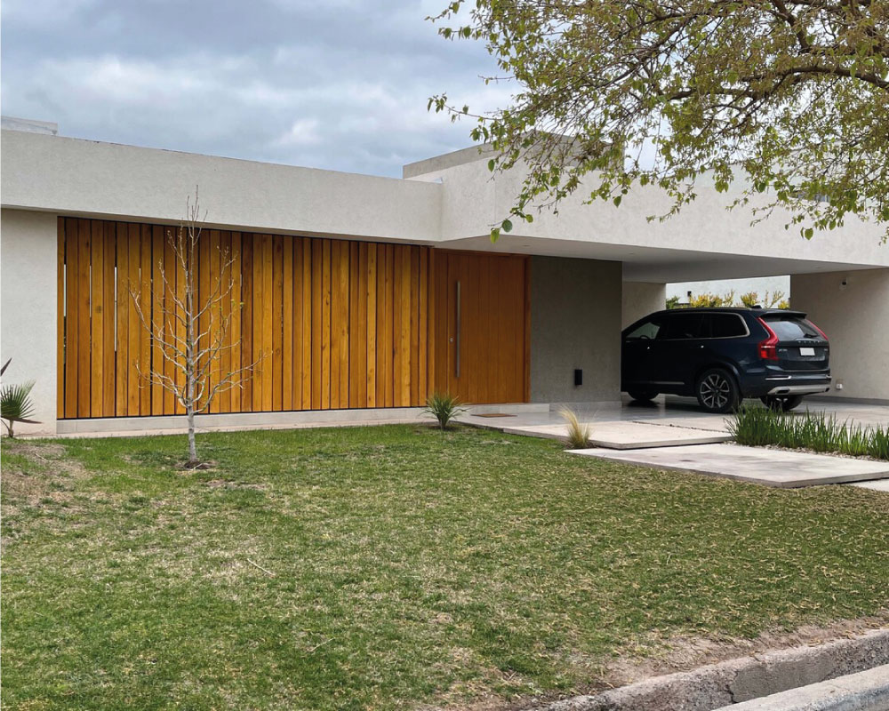

Casa Campana
Información
- Campana, Argentina
- Área: 196 m2
- Año: 2022
Descripción enviada por el equipo del proyecto. El lote se ubica a pocos km de la ciudad de Campana. Un prisma negro de base cuadrada (14 m x 14 m) se posa sobre el territorio. El volumen agota la pisada en una sola planta y, de esta forma, se maximiza la superficie posible a construir. La casa se organiza en 4 módulos de 3,5 m x 14 m, que responden a la fracción en partes iguales del cuadrado, dando como resultado medidas interiores de locales aptas para habitar. Los vacíos entre los mismos proponen fluidez y continuidad espacial. El primer bloque (módulo 1), que constituye el área de servicios, incorpora un espacio semicubierto de galería como guardacoches. La despensa, cocina, lavadero y apoyo del jardín terminan de configurar este primer sector. El segundo bloque (módulo 2 y 3) se propone como el espacio público dentro de la casa e integra al acceso, cuarto de estar, estudio y galería al contrafrente en un espacio continuo. El bloque privado (módulo 4) queda conformado por dos habitaciones en suite, una hacia el frente y otra hacia el contrafrente, separadas entre sí por un pequeño patio que permite añadir un encuadre desde el interior a la vez que favorece la ventilación cruzada.
Se optó por un sistema constructivo en seco independiente de la platea compuesto por una estructura principal metálica de perfiles UPN como marco y paneles de steel frame. El revestimiento se planteó con una lógica material de chapa cuadrada negra sobre el perímetro exterior y de madera maciza de Kiri en los sectores donde el prisma es horadado, manteniendo una misma sección vertical, constante y homogénea, en todas las fachadas.
La cubierta toma toda la superficie construible y genera un espacio interior en sombra que reconoce el entorno expuesto en el que se encuentra. La luz resultante es diáfana y el interior se sumerge en una claridad introspectiva que dialoga tangencialmente con su entorno inmediato
Quiero mi proyecto
Casa AM
Información
- Mendoza, Argentina
- Área: 297 m2
- Año: 2021
El lote se ubica a pocos km de la ciudad de Campana. Un prisma negro de base cuadrada (14 m x 14 m) se posa sobre el territorio. El volumen agota la pisada en una sola planta y, de esta forma, se maximiza la superficie posible a construir. La casa se organiza en 4 módulos de 3,5 m x 14 m, que responden a la fracción en partes iguales del cuadrado, dando como resultado medidas interiores de locales aptas para habitar. Los vacíos entre los mismos proponen fluidez y continuidad espacial. El primer bloque (módulo 1), que constituye el área de servicios, incorpora un espacio semicubierto de galería como guardacoches. La despensa, cocina, lavadero y apoyo del jardín terminan de configurar este primer sector. El segundo bloque (módulo 2 y 3) se propone como el espacio público dentro de la casa e integra al acceso, cuarto de estar, estudio y galería al contrafrente en un espacio continuo. El bloque privado (módulo 4) queda conformado por dos habitaciones en suite, una hacia el frente y otra hacia el contrafrente, separadas entre sí por un pequeño patio que permite añadir un encuadre desde el interior a la vez que favorece la ventilación cruzada.
Se optó por un sistema constructivo en seco independiente de la platea compuesto por una estructura principal metálica de perfiles UPN como marco y paneles de steel frame. El revestimiento se planteó con una lógica material de chapa cuadrada negra sobre el perímetro exterior y de madera maciza de Kiri en los sectores donde el prisma es horadado, manteniendo una misma sección vertical, constante y homogénea, en todas las fachadas.
La cubierta toma toda la superficie construible y genera un espacio interior en sombra que reconoce el entorno expuesto en el que se encuentra. La luz resultante es diáfana y el interior se sumerge en una claridad introspectiva que dialoga tangencialmente con su entorno inmediato
Quiero mi proyecto
Casa Lego
Información
- Canning, Argentina
- Área: 409 m2
- Año: 2022
Descripción enviada por el equipo del proyecto. El lote se ubica a pocos km de la ciudad de Campana. Un prisma negro de base cuadrada (14 m x 14 m) se posa sobre el territorio. El volumen agota la pisada en una sola planta y, de esta forma, se maximiza la superficie posible a construir. La casa se organiza en 4 módulos de 3,5 m x 14 m, que responden a la fracción en partes iguales del cuadrado, dando como resultado medidas interiores de locales aptas para habitar. Los vacíos entre los mismos proponen fluidez y continuidad espacial. El primer bloque (módulo 1), que constituye el área de servicios, incorpora un espacio semicubierto de galería como guardacoches. La despensa, cocina, lavadero y apoyo del jardín terminan de configurar este primer sector. El segundo bloque (módulo 2 y 3) se propone como el espacio público dentro de la casa e integra al acceso, cuarto de estar, estudio y galería al contrafrente en un espacio continuo. El bloque privado (módulo 4) queda conformado por dos habitaciones en suite, una hacia el frente y otra hacia el contrafrente, separadas entre sí por un pequeño patio que permite añadir un encuadre desde el interior a la vez que favorece la ventilación cruzada.
Se optó por un sistema constructivo en seco independiente de la platea compuesto por una estructura principal metálica de perfiles UPN como marco y paneles de steel frame. El revestimiento se planteó con una lógica material de chapa cuadrada negra sobre el perímetro exterior y de madera maciza de Kiri en los sectores donde el prisma es horadado, manteniendo una misma sección vertical, constante y homogénea, en todas las fachadas.
La cubierta toma toda la superficie construible y genera un espacio interior en sombra que reconoce el entorno expuesto en el que se encuentra. La luz resultante es diáfana y el interior se sumerge en una claridad introspectiva que dialoga tangencialmente con su entorno inmediato
Quiero mi proyecto
Casa Piedra
Información
- Acapulco de Juarez, Mexico
- Área: 700 m2
- Año: 2020
Descripción enviada por el equipo del proyecto. El lote se ubica a pocos km de la ciudad de Campana. Un prisma negro de base cuadrada (14 m x 14 m) se posa sobre el territorio. El volumen agota la pisada en una sola planta y, de esta forma, se maximiza la superficie posible a construir. La casa se organiza en 4 módulos de 3,5 m x 14 m, que responden a la fracción en partes iguales del cuadrado, dando como resultado medidas interiores de locales aptas para habitar. Los vacíos entre los mismos proponen fluidez y continuidad espacial. El primer bloque (módulo 1), que constituye el área de servicios, incorpora un espacio semicubierto de galería como guardacoches. La despensa, cocina, lavadero y apoyo del jardín terminan de configurar este primer sector. El segundo bloque (módulo 2 y 3) se propone como el espacio público dentro de la casa e integra al acceso, cuarto de estar, estudio y galería al contrafrente en un espacio continuo. El bloque privado (módulo 4) queda conformado por dos habitaciones en suite, una hacia el frente y otra hacia el contrafrente, separadas entre sí por un pequeño patio que permite añadir un encuadre desde el interior a la vez que favorece la ventilación cruzada.
Se optó por un sistema constructivo en seco independiente de la platea compuesto por una estructura principal metálica de perfiles UPN como marco y paneles de steel frame. El revestimiento se planteó con una lógica material de chapa cuadrada negra sobre el perímetro exterior y de madera maciza de Kiri en los sectores donde el prisma es horadado, manteniendo una misma sección vertical, constante y homogénea, en todas las fachadas.
La cubierta toma toda la superficie construible y genera un espacio interior en sombra que reconoce el entorno expuesto en el que se encuentra. La luz resultante es diáfana y el interior se sumerge en una claridad introspectiva que dialoga tangencialmente con su entorno inmediato